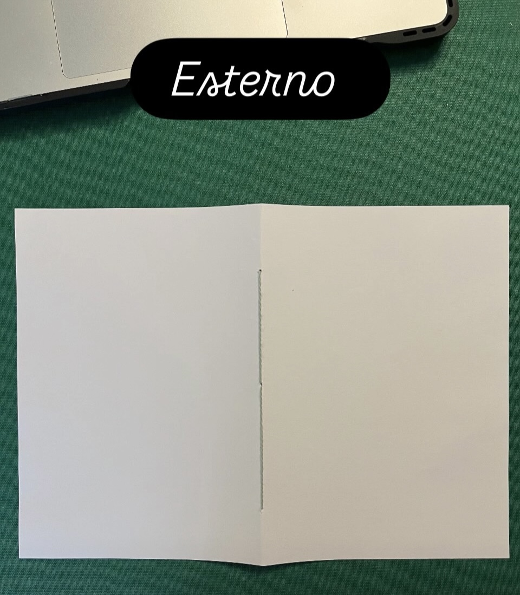
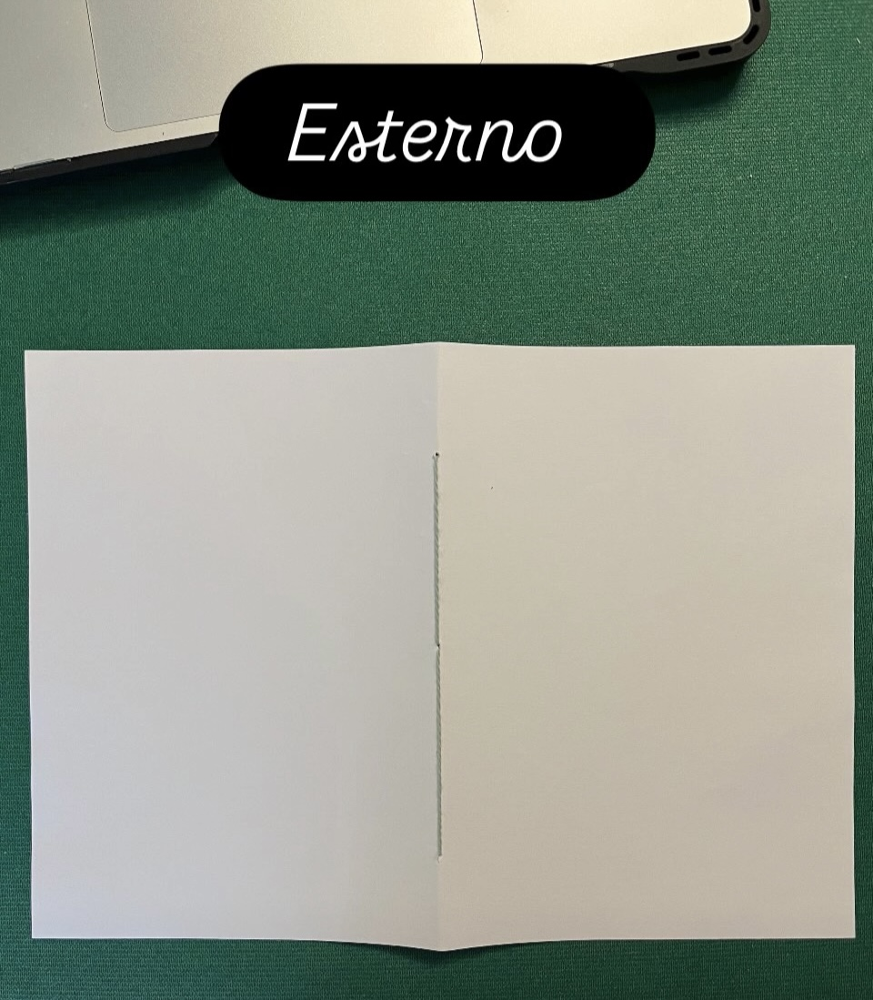

Ho voluto creare questo oggetto in primis per fare qualcosa di manuale, artigianale. Mi piace usare le mie mani come strumento di creazione, mi piace tantissimo l'uso della carta come strumento, e questo oggetto mi ha richiesto una introduzione al mondo del cucito, avendo usato ago e filo per la rilegatura.
Quindi riassumendo, perché l'ho fatto?
Per unire una dimensione pratica, manuale, rilassante, soddisfacente, ad una in cui imparo qualcosa di nuovo.
 

Procedura sintetica:
1. Scegliere un foglio A4.
2. Piegare il foglio e segnare 3–5 fori.
3. Preparare ago e filo.
4. Cucire dal centro, dal basso e dall’alto.
5. Chiudere la cucitura con un nodo semplice.
6. Verificare la tensione e la linearità.
Considerazioni finali
Ho imparato che l'applicazione manuale produce ordine mentale.
Ho imparato che da cosa nasce cosa: desidero creare una teca dove inserire e poter esporre questo oggetto. Lo faccio per me e nessun altro.
Come si collega al mio percorso più ampio?
Un'attività piacevole, soddisfacente, che crea una skill osservabile, vendibile e condivisibile.
È un oggetto sottile ma pieno, che mi dice: “puoi costruire, puoi custodire.”
È un oggetto sacro perché è nato senza aspettativa, solo per vedere se ci riuscivo.
Dal taccuino nasce la teca, e dalla teca nascerà il modo di custodire ciò che sto diventando.